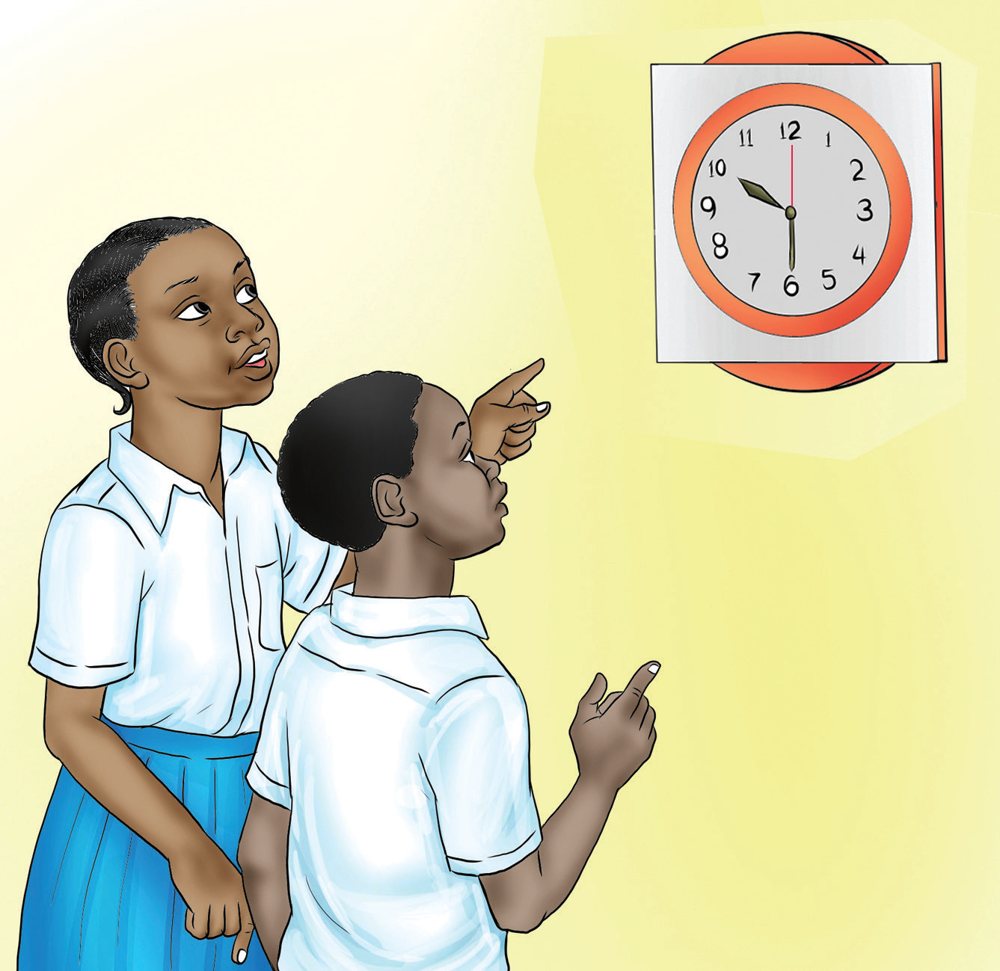
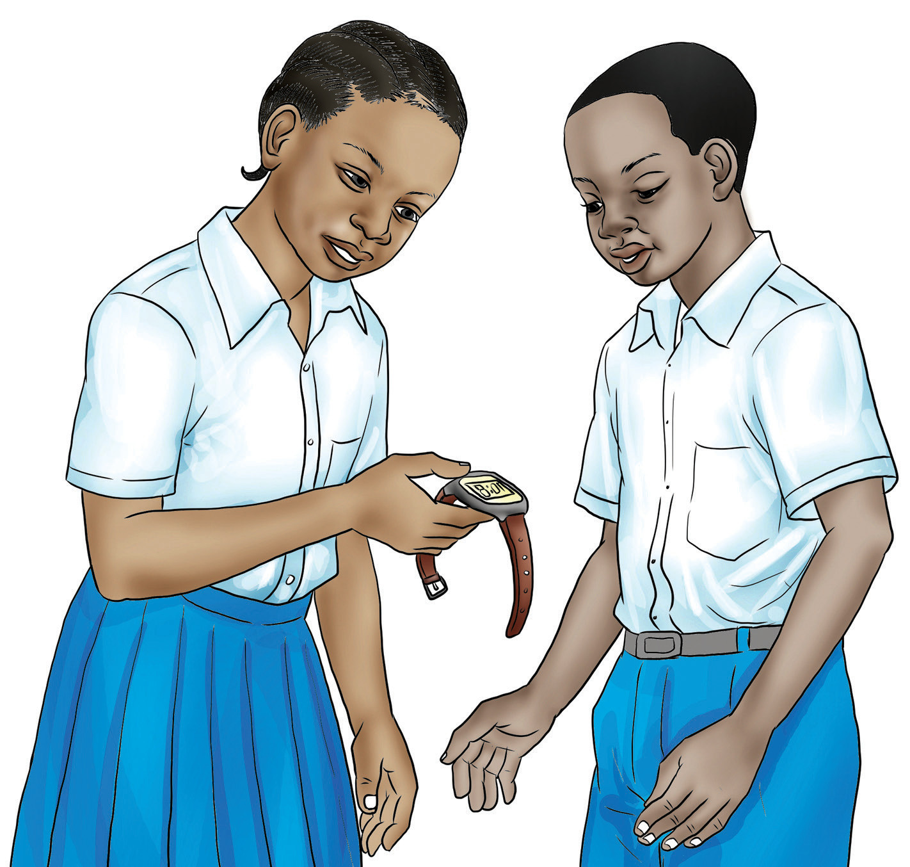

Vizio vingine ni milimeta (mm) na sentimeta (sm). Kifaa kingine kinachotumika ni futikamba. Vifaa hivi vinatumika kupimia urefu wa vitu mbalimbali katika mazingira yetu.
Chunguza Vielelezo namba 3 na 4, kisha fanya Kazi namba 3.

Kielelezo namba 3: Wanafunzi wakisoma muda katika saa ya ukutani

Kielelezo namba 4: Wanafunzi wakisoma muda katika saa ya mkononi